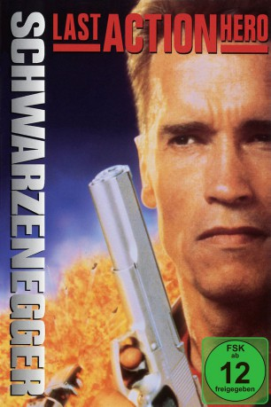
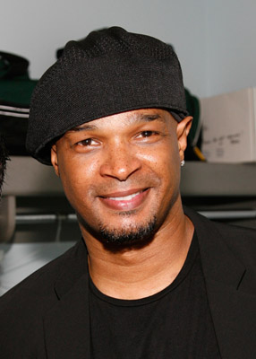

#1213 Der Letzte Action Held
Alternativ: Last Action Hero
 
 IMDB-Wertung: 6.3 / 10
IMDB-Wertung: 6.3 / 10  Metascore: 44
Metascore: 44 
Jede freie Minute rennt der elfjährige Danny ins Kino. Sein Leinwand-Idol ist Jack Slater, der Superaction-Kinoheld. Keinen seiner Filme hat Danny bislang versäumt. Als er vom Filmvorführer ein magisches Kinoticket geschenkt bekommt, geschieht das Unglaubliche: Danny landet mitten im neuesten Jack Slater-Film! Die sensationellen Action-Abenteuer übertreffen Dannys kühnste Träume – aber auch Jack Slaters schlimmste Befürchtungen.
Jahr: 1993
Dauer: 130 Minuten
FSK: 12
Land: USA Studio: Columbia PicturesTonspuren: DTS - ,
Untertitel: Deutsch,
Auflösung: 1080p (1920x1080) Größe: 11980 MB
Genre: Action, Abenteuer, Komödie, Fantasy
Regisseur:  John McTiernan
John McTiernan
Drehbuch: Zak Penn, Adam Leff, Shane Black, David Arnott
Soundtrack: Michael Kamen
Darsteller:
 Arnold Schwarzenegger als Jack Slater
Arnold Schwarzenegger als Jack Slater F. Murray Abraham als John Practice
F. Murray Abraham als John Practice- Art Carney als Frank
 Charles Dance als Benedict
Charles Dance als Benedict Frank McRae als Lieutenant Dekker
Frank McRae als Lieutenant Dekker Tom Noonan als Ripper / Tommy Noonan
Tom Noonan als Ripper / Tommy Noonan Robert Prosky als Nick
Robert Prosky als Nick Anthony Quinn als Tony Vivaldi
Anthony Quinn als Tony Vivaldi Mercedes Ruehl als Irene Madigan
Mercedes Ruehl als Irene Madigan- Austin O'Brien als Danny Madigan
 Ian McKellen als Death
Ian McKellen als Death Joan Plowright als Teacher
Joan Plowright als Teacher Karen Duffy als Karen Duffy
Karen Duffy als Karen Duffy- Leeza Gibbons als Leeza Gibbons
- M.C. Hammer als M.C. Hammer
- Little Richard als Little Richard
- Maria Shriver als Maria Shriver
- Melvin Van Peebles als Melvin Van Peebles
 Bridgette Wilson-Sampras als Whitney / Meredith
Bridgette Wilson-Sampras als Whitney / Meredith Noah Emmerich als Rookie
Noah Emmerich als Rookie Sven-Ole Thorsen als Gunman
Sven-Ole Thorsen als Gunman- Tina Turner als The Mayor
 Michael Chieffo als Monroe
Michael Chieffo als Monroe- Mike Muscat als Cop in L.A. Station
 John Finnegan als Watch Commander
John Finnegan als Watch Commander- Angie Everhart als Video Babe
- Dex Elliott Sanders als Mitchell
 Nick Dimitri als Funeral Doctor
Nick Dimitri als Funeral Doctor Rick Ducommun als Ripper's Agent
Rick Ducommun als Ripper's Agent- Wendle Josepher als Candy Girl
 Michael V. Gazzo als Torelli
Michael V. Gazzo als Torelli- Lee Reherman als Krause
 Colleen Camp als Ratcliff
Colleen Camp als Ratcliff- Tiffany Puhy als Autograph Seeker
 Chevy Chase als Chevy Chase
Chevy Chase als Chevy Chase Robert Patrick als T-1000
Robert Patrick als T-1000 Sharon Stone als Sharon Stone
Sharon Stone als Sharon Stone Jean-Claude Van Damme als Jean-Claude Van Damme
Jean-Claude Van Damme als Jean-Claude Van Damme-  Damon Wayans als Damon Wayans
 Lena Banks als Movie House Patron , uncredited
Lena Banks als Movie House Patron , uncredited- Gregory J. Barnett als Startled Truck Driver , uncredited
- Lindsey Nicole Brooks als Girl at funeral , uncredited
- Chris Connelly als Chris Connelly , uncredited
 Danny DeVito als Whiskers , uncredited
Danny DeVito als Whiskers , uncredited- Bryan Hanna als 'Valet' Manager , uncredited
 Peter Kent als Maitre D' , uncredited
Peter Kent als Maitre D' , uncredited- Dagmar Koller als Woman in Police Headquarters , uncredited
- Lou Lollio als Mafioso , uncredited
 Frank Patton als Cop Touched by Death , uncredited
Frank Patton als Cop Touched by Death , uncredited- Paul Vincent Rapisarda als Sidewalk pedestrian , uncredited
Datei: X:\1993\Letzte Action Held, Der (1993, FSK12, 1920x1080).mkv seit 04.06.2015
Festplatte: HD 1992-1995
 Es gibt insgesamt 68 Filme in der Gruppe '1993'
Es gibt insgesamt 68 Filme in der Gruppe '1993'